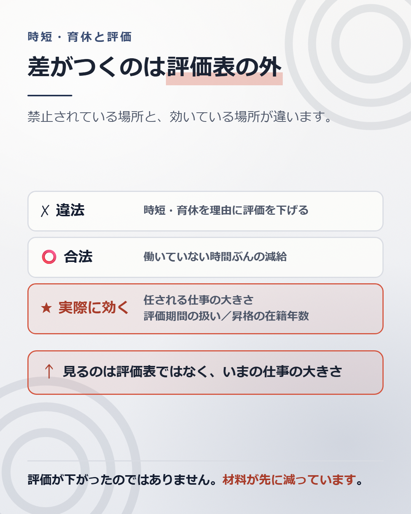

時短勤務や育休を理由に評価を下げることは、法律で禁止されています。
育児・介護休業法10条が、育児休業を申し出たこと、取得したことを理由とする解雇その他の不利益な取扱いを禁じています。短時間勤務など所定労働時間の短縮措置についても、同じ禁止が置かれています（育児・介護休業法23条の2）。
妊娠や出産を理由とする不利益な取扱いは、男女雇用機会均等法9条3項が禁じています。
厚生労働省の指針は、不利益な取扱いにあたる例として、昇進・昇格の人事考課で不利益な評価を行うことを挙げています。評価を下げることは、そこに含まれます。
それでも、戻ってきたあとに差がつくことがあります。禁止されている場所と、実際に効いている場所が違うからです。

法律が禁じているのは、時短や育休を理由に不利益に扱うことです。
だから、「時短だからC評価」は違法です。「育休を取ったから昇格を見送る」も違法です。
一方で、働いていない時間ぶんの給与が支払われないことは、違法ではありません。 時短で労働時間が8時間から6時間になれば、その割合で給与が減ります。働いた時間に対して払う、という当たり前の話です。
3歳に満たない子を養育する人への短時間勤務は、育児・介護休業法23条1項が会社に用意を求めている制度です。1日6時間を原則とする形で定められています。
厚生労働省の指針は、線の引き方まで示しています。賞与などを計算するときに、現に働かなかった時間や日数に応じて減らすことは、不利益な取扱いにあたりません。 一方で、現に働かなかった分を超えて減らすことは、不利益な取扱いにあたります。
給与が時間比例で減るのは合法。働いていない分を超えて減らすのは違法。評価そのものを下げるのも違法。 3つは別の話です。
差がつく場所は、たいてい3つです。どれも評価表の外にあります。
ひとつめは、任される仕事の大きさです。
短い時間で終わる仕事、引き継ぎやすい仕事が回ってきます。悪意ではなく、配慮であることも多いです。
ただし記事6で見たとおり、評価は期初の目標で測られます。小さい案件が続くと、期末に見せられる材料が減ります。 評価を下げているのは時短ではなく、目標に置けるものが小さかったことです。
ふたつめは、評価期間の扱いです。
年度の途中で休業に入ると、評価の対象になる月が減ります。在籍月数で按分する会社もあれば、休業期間を除いて評価する会社もあります。扱いは規程に書いてあります。書いていない会社もあります。
みっつめは、昇格の要件です。
記事1で書いたとおり、昇格には在籍年数などの要件があります。休業期間を年数に算入するかどうかで、昇格の順番が1年ずれることがあります。
「評価が下がった気がする」と感じたとき、評価表を見ても答えは出ません。
見るのは、いま持っている仕事の大きさです。
去年の担当と今年の担当を並べます。案件の規模、関わる人数、決められる範囲。 3つとも小さくなっていれば、来年の評価も小さくなります。
評価が先に下がったのではありません。材料が先に減っています。
配分を戻したいとき、時間の話から入ると動きません。動くのは、成果の話から入ったときです。
「時短ですができます」ではなく、「この案件は、6時間の中でここまで進められます。ここから先は誰かと分けたいです」という形にします。
できる範囲と、分けたい範囲を、先に自分で線を引きます。 線を引かないと、相手は安全側に倒します。安全側が、小さい仕事です。
就業規則か育児介護休業規程を開いてください。
探すのは2つです。休業期間を、評価の対象期間からどう扱うか。 そして休業期間を、昇格の在籍年数に算入するか。
書いてあれば、自分がどう扱われるかが分かります。書いていなければ、それも情報です。 運用で決まっているということなので、人事に聞く根拠になります。
もうひとつ、去年と今年の担当案件を紙に並べてください。 規模、人数、決められる範囲。3つを比べます。
規程を確かめ、配分を戻し、目標を具体的にすれば、評価は動きます。
それでも記事1で見たとおり、評価で動くのは年収で数万円から十数万円です。帯そのものを変えるのは、市場です。
時短で働ける会社かどうか、時短でも帯が落ちない会社かどうかは、外を見ないと比べられません。 そして自分にいくらの値段がつくかは、外から値段がつかないと分かりません。
調べ方は、別の記事にまとめています。